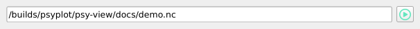
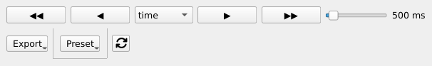
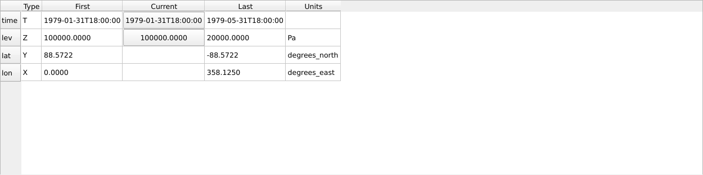
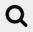

User guide
Starting the GUI
Assuming that you installed psy-view, you can start it by typing:
$ psy-view
in the terminal (or Anaconda Prompt on Windows). On windows you additionally have the opportunity to start it from the start menu (just search for psy-view), assuming that you have installed it via conda.
You can also directly pass a path to a netCDF file, e.g.:
$ psy-view demo.nc
to open it. You can also directly select a variable for plotting via the
-n option, e.g.:
$ psy-view demo.nc -n t2m
Please see the section Command line usage for more information, or type:
$ psy-view --help
in the terminal.
Note
The psy-view widget is also available from the psyplot GUI. Just type:
$ psyplot
in the terminal to start it from there. See also Using psy-view within the psyplot GUI.
The GUI
The usage of psy-view should be quite intuitive and this small guide gives you a quick intro into the central elements. Please let us know if you encounter any problems.
psy-views central element: the dataset widget.
The dataset widget is the central element of psy-view. It runs as a standalone application, or within the psyplot gui (see Using psy-view within the psyplot GUI).
Resizing the GUI elements
The widget is made flexible such that you can adapt the heights of the individual elements. Just move your cursor between the elements to change their size.
The following screencast illustrates this functionality:
The central elements (from top to bottom) are presented in the next sections.
Open a netCDF file
Click the button to select a netCDF file from the disk, or directly enter the path in the line widget. You can open multiple datasets at the same time within the widget. The selection of the current dataset can be done through the dataset tree (see below)
View the dataset
Here you can see all open datasets and select the one you want to visualize. Expand the items to get more information about variables and their attributes.
Navigate and export
In the top row, you can increase or decrease the dimension of the plotted variable.
Clicking (or  ) decreases (or increases) the selected
dimension, whereas
) decreases (or increases) the selected
dimension, whereas  and
and  makes an
animation. You can control the speed (i.e. frames per second) of the
animation via the slider next to the control
makes an
animation. You can control the speed (i.e. frames per second) of the
animation via the slider next to the control
The menu allows you to export your plots as images files, animations or to export the plot settings for later usage. The button lets you select custom presets for your plots (see the psyplot docs).
The button finally let’s you close all open figures and datasets and automatically recreates the figures with the same settings. This can be very useful when the file on your disk changed, and you just want to see the latest version.
Select the active plot
The next section let’s you switch between the different open plots. Once you have created a new plot with one of the variable buttons (see below), you can

{kind=link}
{kind=link}
{kind=link}
{kind=link}
{kind=link}
{kind=link}
{kind=link}
{kind=link}
Select the plot method
psy-view (currently) supports three of the psyplot plot methods.
plot2dfor 2D scalar fields (rectilinear or unstructured, see the section plot2d)mapplotfor georeferenced 2D scalar fields (rectilinear or unstructured, see the section mapplot)lineplotfor 1D lines (see the section , see the section lineplot)
mapplot
For georeferenced 2D-scalar fields (or more than 2D), you have the following options:
clicking on a grid cell in the plot generates a line plot of the variable at that location (as you know it from ncview). The x-axis is determined by the dimension you chose in the navigation (see Navigate and export).
the colormap button
 changes the colormap to another preset
changes the colormap to another presetthe
 button switches to other projections for the basemap
button switches to other projections for the basemapthe button opens a dialog for formatting the background (meridionals, parallels, land color, ocean color, coastlines, etc.)
the Plot type menu let’s you select the type of plotting. You can choose one of the following options
- Default
This mode uses an efficient algorithm for regular lat-lon meshes (using matplotlibs
pcolormesh()function), or an explicit drawing of the individual grid cell polygons for unstructured grids (see Gridcell polygons below). These two methods draw each grid cells explicitly. Gridcell boundaries are thereby extracted following the CF (or UGRID)-Conventions. If this is not possible, they are interpolated from the gridcell coordinates.- Filled contours
Different from the Default method this is not visualizing each cell individually, but instead plots the contours using matplotlibs
contourf()function.- Contours
Similar to Filled contours, but we only draw the outlines of the contour areas using matplotlibs
contour()function.- Gridcell polygons
This mode (which is the default for unstructured grids (not curvilinear grids) draws each grid cell individually using a variant of matplotlibs
pcolor()function- Disable
Make no plotting at all. This can be useful if you want to display the datagrid only (see next point)
More information on the plot options can be found in the docs of the
plotformatoption.the button opens a dialog to edit colorbar labels, titles, etc.
{kind=link}
{kind=link}
{kind=link}
{kind=link}
{kind=link}
Furthermore you have a couple of dropdowns:
- x- and y-dimension
This is the dimension in the netCDF variable that represents the longitudinal (latitudinal) dimension.
- x- and y-coordinate
This is the coordinate in the netCDF file that is used for the finally to visualize the data (equivalent to the CF-conventions coordinates attribute of a netCDF variable.)
psyplot automatically decodes the variable and sets x- and y-dimension, as well as the appropriate coordinate. These dropdowns, however, let you modify the automatic choice of psyplot.
plot2d
Simple 2D plots are also possible for variables with 2 dimensions and more (or scalar fields on an unstructured grid). The options are the same as for mapplot, but for obvious reasons there are no projection and basemap settings.
lineplot
The lineplot visualizes your variables as a 1D line. This widget provides the following functionalities:
{kind=link}
{kind=link}
{kind=link}
{kind=link}
Note
Changing the variable (see Select the variables) or the dimensions (see Select the dimensions) only affects the current line that you can select with the dropdown.
Select the variables
The next section in the GUI shows the variables in the active dataset (note that you can switch to another dataset using the dataset tree, see above).
Click on a variable to make a plot. If there is already a plot of a variable in the dataset, it will be updated to show the new data.
Note
The variable buttons will make new plots, if there is None already, or
update the variable in the current plot. If you want to visualize two plots
at the same time, use the  button (see the
plot selection above).
button (see the
plot selection above).
Select the dimensions
The last table is the dimension table. When a variable is plotted, this widget displays the ranges, of the netCDF dimensions and lets you update the scalar dimensions (in the screenshot above, time and lev ).
{kind=link}
{kind=link}
Left-click on such a button increases the dimension of the plot by one step, right-click decreases the dimension.
Navigation inside the plot
psy-view uses matplotlib for the visualization which comes with an interactive backend to navigate inside the plot.

Especially the Pan/Zoom button and the zoom-to-rectangle button  are of interest for you. You can enable and disable them by clicking on the corresponding button in the toolbar.
{kind=link}
{kind=link}
Warning
In principal you can also edit the colormap using the  button from the toolbar. But this is known to cause errors for the mapplot
method (see #25), so you should use the corresponding widgets from the gui (see
mapplot).
button from the toolbar. But this is known to cause errors for the mapplot
method (see #25), so you should use the corresponding widgets from the gui (see
mapplot).
- The
Pan/Zoombutton This button has two modes: pan and zoom. Click the toolbar button to activate panning and zooming, then put your mouse somewhere over an axes. Press the left mouse button and hold it to pan the figure, dragging it to a new position. When you release it, the data under the point where you pressed will be moved to the point where you released. If you press ‘x’ or ‘y’ while panning the motion will be constrained to the x or y axis, respectively. Press the right mouse button to zoom, dragging it to a new position. The x axis will be zoomed in proportionately to the rightward movement and zoomed out proportionately to the leftward movement. The same is true for the y axis and up/down motions. The point under your mouse when you begin the zoom remains stationary, allowing you to zoom in or out around that point as much as you wish. You can use the modifier keys ‘x’, ‘y’ or ‘CONTROL’ to constrain the zoom to the x axis, the y axis, or aspect ratio preserve, respectively.
With polar plots, the pan and zoom functionality behaves differently. The radius axis labels can be dragged using the left mouse button. The radius scale can be zoomed in and out using the right mouse button.
- The
Zoom-to-rectanglebutton Click this toolbar button to activate this mode. Put your mouse somewhere over an axes and press a mouse button. Define a rectangular region by dragging the mouse while holding the button to a new location. When using the left mouse button, the axes view limits will be zoomed to the defined region. When using the right mouse button, the axes view limits will be zoomed out, placing the original axes in the defined region.
More information can be found in the matplotlib documentation.
Using psy-view within the psyplot GUI
psy-view is also available from the psyplot GUI. Just type psyplot in the
terminal to start it. The only difference is that the available plots (see
Select the active plot) are managed through the current main project
(psyplot.project.gcp(), see also the psyplot GUIs
project content), also accessible through
the mp variable in the
integrated IPython console. This gives you extra
power as you now cannot only change your plots through the intuitive psy-view
interface, but also from the command line or through the more flexible
formatoptions widget.